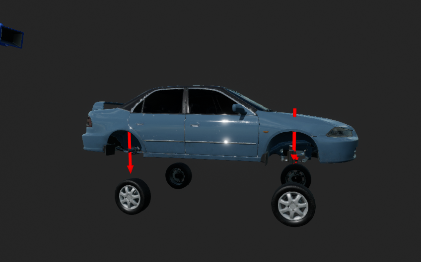

Car Controller in Unreal 5.0 with C++
Introduction
As an aspiring game developer, I embarked on a project to gain more hands-on experience with gameplay mechanics in Unreal Engine. My goal was to create a customizable car controller that would provide a unique and fun gameplay experience for players, inspired by my childhood memories of GTA cheat codes that allowed the player's car to fly. As the project progressed, I drew inspiration from the unique movement mechanics of Rocket League to further improve the controls and create a custom car controller that offers a distinct gameplay experience for players.
Development Process
The project involved building a car from scratch, using a static mesh for the body and separate wheel meshes. Unreal Engine 5.0 and C++ were used to create the car controller. The project presented several challenges, including setting up the project, which took approximately one week, and resolving issues with Unreal Engine 5.1 crashing and becoming corrupt. Additionally, Visual Studio Intellisense wasn't functioning properly, leading me to switch to another IDE, Rider, which worked better for me. The most significant challenge I faced was the lengthy compile time, which took around two minutes to compile each time I changed a line of code. With a total of 60 hours of work spread across three weeks, the overall compile time amounted to approximately 1,200 minutes or 20 hours.
Wheels
I implemented rotation logic to enable the wheels, which were separate meshes from the car, to rotate realistically when the car is driven. Additionally, I incorporated logic to allow the wheels to turn left and right based on the player's input, along with implementing suspension logic.
The suspension logic code simulates the wheels' movement and their interaction with the ground, and it operates by executing a line trace from the wheel to the ground, detecting any blocking hits.
When a hit is detected, the code determines the spring length between the wheel and the hit point and applies spring and damper forces based on the difference between the current and previous spring lengths. Ultimately, the resulting forces are applied to the car's body mesh at the location of the wheel. Conversely, if no blocking hit is detected, the spring length is assigned to its maximum value, indicating that the wheel is not in contact with the ground.
The suspension logic code plays a crucial role in generating a realistic simulation of the car's movement and its interaction with the environment. By using this implementation, the car's movement emulates that of a real vehicle, making for a more immersive gaming experience.

Conclusion
My extensive work on a custom car controller within Unreal Engine was a challenging but rewarding experience that showcased my expertise in game development.
The controller boasts fundamental controls for ground movement and advanced aerial controls that diverge from traditional GTA mechanics,
with inspiration from Rocket League's movements. Notably, the controller features separate wheel meshes, with intricate rotation logic that responds to user input,
alongside suspension logic that accurately simulates a suspension system's operation.
Throughout the project, I gained a better understanding of Unreal Engine and the intricacies of developing an engaging gameplay experience.
As I continue to refine and enhance the controller, I aim to optimize camera controls for maximum player immersion,
fine-tune the glide of the car on the ground, and improve the aerial controls further.
Although Unreal Engine was new to me, I successfully adapted and showcased my skills in game development.
However, the end product did not reach its full potential,
and I am eager to continue refining the controller to create an even more polished and versatile product.